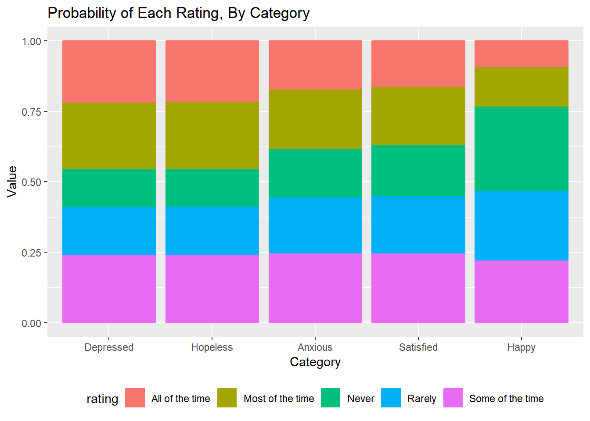

Analyzing Likert Scale of Depressive Symptoms
Skills
- Data Analysis
- Logistic Regression
- R
- SAS
Packages
library(knitr)
library(plotly)## Loading required package: ggplot2##
## Attaching package: 'plotly'## The following object is masked from 'package:ggplot2':
##
## last_plot## The following object is masked from 'package:stats':
##
## filter## The following object is masked from 'package:graphics':
##
## layoutlibrary(ggplot2)
library(MASS)##
## Attaching package: 'MASS'## The following object is masked from 'package:plotly':
##
## selectlibrary(plyr)##
## Attaching package: 'plyr'## The following objects are masked from 'package:plotly':
##
## arrange, mutate, rename, summariseBackground
At the beginning of the Work-Focused Intervention for Depression (WFID) trial, a baseline survey containing questions about respondents’ level and frequency of various moods was administered. Researchers gathered responses from 90 individuals in the experimental group and now want to determine the ranking of their responses for one survey question that used a Likert scale - specifically, they want to know whether respondents experienced certain depressive symptoms more often than others. Figure 1 displays the survey question being analyzed and Figure 2 displays a sample respondent answer.
Figure 1: Frequency of Various Moods Survey Question

Figure 2: Sample Respondent Answer to Survey Question

Methods
I input the respondent answers into a table (group-level format).
In the table shown below:
Obsis an ID for each rowRatingcontains the response rating given by each respondent, from 1 to 5Itemlists the type of mood being consideredCountgives the frequency that each item received for each rating
| obs | item | rating | count |
|---|---|---|---|
| 1 | Depressed | 1 | 22 |
| 2 | Depressed | 2 | 20 |
| 3 | Depressed | 3 | 18 |
| 4 | Depressed | 4 | 16 |
| 5 | Depressed | 5 | 14 |
| 6 | Happy | 1 | 6 |
| 7 | Happy | 2 | 15 |
| 8 | Happy | 3 | 20 |
| 9 | Happy | 4 | 23 |
| 10 | Happy | 5 | 26 |
| 11 | Hopeless | 1 | 20 |
| 12 | Hopeless | 2 | 22 |
| 13 | Hopeless | 3 | 20 |
| 14 | Hopeless | 4 | 14 |
| 15 | Hopeless | 5 | 14 |
| 16 | Satisfied | 1 | 13 |
| 17 | Satisfied | 2 | 17 |
| 18 | Satisfied | 3 | 28 |
| 19 | Satisfied | 4 | 18 |
| 20 | Satisfied | 5 | 14 |
| 21 | Anxious | 1 | 16 |
| 22 | Anxious | 2 | 18 |
| 23 | Anxious | 3 | 22 |
| 24 | Anxious | 4 | 19 |
| 25 | Anxious | 5 | 15 |
I ran an ordinal logistic regression model (proportional odds model) on the data to determine the ranking of each item, modeling the independent variable, item, against the response variable, rating. For the reference mood item, I used “Happy.” I assumed that the scale from one response option to another (i.e., Never to Rarely, Rarely to Some of the time, etc.) is the same for all response options; the proportional odds assumption held (p > 0.05) for this model, supporting this. I modeled my parameters over lower-ordered values of the ratings - that is, a larger positive parameter/coefficient indicates respondents’ preference or tendency toward the lower-numbered ratings for that mood item compared to the reference mood item.
Results - SAS
The SAS code and output for the model is provided below.
Figure 3: SAS Code for Logistic Regression Model

Figure 4: Partial SAS Output for Logistic Regression Model

Figure 5: Probabilities of Ratings, By Mood

From Figure 3 in the SAS output above, we can see that the coefficient for the Depressed item is 1.0094, indicating that the log odds of the Depressed item having a lower-numbered rating compared to the Happy item is 1.0094. Recall that a lower-numbered rating indicates that the respondent experienced the mood more frequently. Thus, respondents experienced depressive moods more often than happy moods.
The relative magnitude of the slopes in Figure 4 above imply the ordering of their frequency. Thus, the order of most frequently experienced mood to least frequently experienced mood among these 90 respondents is depressed, hopeless, anxious, satistfied, and happy. Note that Figure 4 also gives the odds of a respondent picking a lower-numbered rating for each mood item compared to the “Happy” item.
Figure 5 plots the expected probability of each rating by mood. We can clearly tell, just by viewing the figure, that a respondent is more likely to feel depressed all of the time in the past month rather than feel happy all of the time in the past month.
Results - R
We run the same model in R. The R code and output for the model is provided below.
item <- factor(rep(c("Happy", "Depressed", "Hopeless", "Satisfied", "Anxious"),
c(90, 90, 90, 90, 90)),
levels = c("Happy", "Depressed", "Hopeless", "Satisfied", "Anxious"))
happy <- c(6, 15, 20, 23, 26) # cell counts
depressed <- c(22, 20, 18, 16, 14) # cell counts
hopeless <- c(20, 22, 20, 14, 14) # cell counts
satisfied <- c(13, 17, 28, 18, 14) # cell counts
anxious <- c(16, 18, 22, 19, 15) # cell counts
rating <- c("All of the time","Most of the time","Some of the time","Rarely","Never")
rating2 <- factor(c(rep(rating, happy),
rep(rating, depressed),
rep(rating, hopeless),
rep(rating, satisfied),
rep(rating, anxious)),
levels = rating)
model <- data.frame(item, rating2)
#Ordinal Logistic Regression Model
logmodel <- polr(rating2 ~ item, data = model, Hess = TRUE)
summary(logmodel)## Call:
## polr(formula = rating2 ~ item, data = model, Hess = TRUE)
##
## Coefficients:
## Value Std. Error t value
## itemDepressed -1.0094 0.2699 -3.739
## itemHopeless -1.0065 0.2683 -3.751
## itemSatisfied -0.6549 0.2616 -2.503
## itemAnxious -0.7116 0.2650 -2.686
##
## Intercepts:
## Value Std. Error t value
## All of the time|Most of the time -2.2909 0.2192 -10.4510
## Most of the time|Some of the time -1.1943 0.1992 -5.9959
## Some of the time|Rarely -0.1845 0.1916 -0.9626
## Rarely|Never 0.8581 0.1981 4.3320
##
## Residual Deviance: 1423.476
## AIC: 1439.476Based on the R output above, we can see that the results are the same as those derived from the SAS code. R adds on minus signs to the parameters so that a larger positive parameter/coefficient actually indicates respondents’ preference or tendency toward the HIGHER-numbered ratings for that mood item compared to the reference mood item. For instance, as shown below, exponentiating the coefficient for the Depressed item (-1.0094) gives us 0.3644 while exponentiating the coefficient for the Anxious item (-0.7116) gives us 0.4909 - thus, the odds of the Depressed item having a higher-numbered rating compared to the Happy item is 0.3644 while the odds of the Anxious item having a higher-numbered rating compared to the Happy item is 0.4909.
exp(coef(logmodel))## itemDepressed itemHopeless itemSatisfied itemAnxious
## 0.3644238 0.3655091 0.5195137 0.4908442If we find the inverse of the exponentiation of all the coefficients, we can derive the odds of a mood item having a LOWER-numbered rating compared to the Happy item, as shown below. Note that these odds ratios are the same as those derived in Figure 3 using SAS! The order of most frequently experienced mood to least frequently experienced mood among these 90 respondents remains the same as that derived in SAS - depressed, hopeless, anxious, satistfied, and happy.
or <- 1 / exp(coef(logmodel))
or## itemDepressed itemHopeless itemSatisfied itemAnxious
## 2.744058 2.735910 1.924877 2.037306Lastly, we can recreate Figure 5 and plot the expected probability of each rating by mood.
#Predictions
predict(logmodel, newdata = data.frame(item = "Depressed"), type = "p")## All of the time Most of the time Some of the time Rarely
## 0.2172945 0.2366131 0.2413848 0.1708813
## Never
## 0.1338263predict(logmodel, newdata = data.frame(item = "Hopeless"), type = "p")## All of the time Most of the time Some of the time Rarely
## 0.2167892 0.2363814 0.2414915 0.1711666
## Never
## 0.1341714predict(logmodel, newdata = data.frame(item = "Anxious"), type = "p")## All of the time Most of the time Some of the time Rarely
## 0.1708929 0.2107209 0.2472091 0.1989226
## Never
## 0.1722544predict(logmodel, newdata = data.frame(item = "Satisfied"), type = "p")## All of the time Most of the time Some of the time Rarely
## 0.1629993 0.2053115 0.2471686 0.2040211
## Never
## 0.1804995predict(logmodel, newdata = data.frame(item = "Happy"), type = "p")## All of the time Most of the time Some of the time Rarely
## 0.09187603 0.14060895 0.22153085 0.24824872
## Never
## 0.29773545#Probabilities of Rating for Each Mood Item, Plotted
a <- factor(predict(logmodel, newdata = data.frame(item = "Depressed"), type = "p"))
b <- factor(predict(logmodel, newdata = data.frame(item = "Hopeless"), type = "p"))
c <- factor(predict(logmodel, newdata = data.frame(item = "Anxious"), type = "p"))
d <- factor(predict(logmodel, newdata = data.frame(item = "Satisfied"), type = "p"))
e <- factor(predict(logmodel, newdata = data.frame(item = "Happy"), type = "p"))
depcat <- c("Depressed", "Depressed", "Depressed", "Depressed", "Depressed")
hopelesscat <- c("Hopeless", "Hopeless", "Hopeless", "Hopeless", "Hopeless")
anxiouscat <- c("Anxious", "Anxious", "Anxious", "Anxious", "Anxious")
satisfiedcat <- c("Satisfied", "Satisfied", "Satisfied", "Satisfied", "Satisfied")
happycat <- c("Happy", "Happy", "Happy", "Happy", "Happy")
apredict <- data.frame(a, depcat, rating)
apredict <- (plyr::rename(apredict, c("a"="value", "depcat"="category")))
bpredict <- data.frame(b, hopelesscat, rating)
bpredict <- (plyr::rename(bpredict, c("b"="value", "hopelesscat"="category")))
cpredict <- data.frame(c, anxiouscat, rating)
cpredict <- (plyr::rename(cpredict, c("c"="value", "anxiouscat"="category")))
dpredict <- data.frame(d, satisfiedcat, rating)
dpredict <- (plyr::rename(dpredict, c("d"="value", "satisfiedcat"="category")))
epredict <- data.frame(e, happycat, rating)
epredict <- (plyr::rename(epredict, c("e"="value", "happycat"="category")))
total <- rbind(apredict, bpredict)
total2 <- rbind(total, cpredict)
total3 <- rbind(total2, dpredict)
total4 <- rbind(total3, epredict)
total4$value <- as.numeric(as.character(total4$value))
plot = total4 %>%
ggplot(aes(fill = rating, x = category, y = value, color = rating)) +
geom_bar(stat = "identity") +
labs(
title = "Probability of Each Rating, By Category",
x = "Category",
y = "Value"
) +
scale_y_continuous(limits=c(0, 1)) +
geom_smooth(se = FALSE) +
theme(legend.position = "bottom")
plot## `geom_smooth()` using method = 'loess' and formula 'y ~ x'